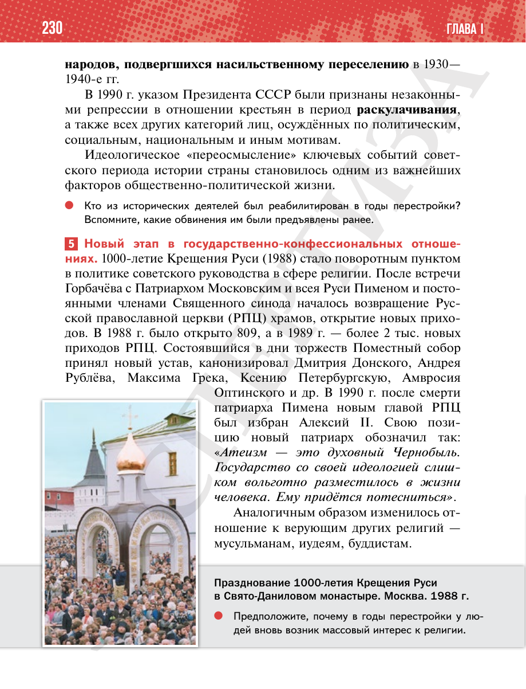

⌂
Мединский.нет
Последнее обновление: 30.08.2026
Мединский.нет
›
История России. 11 класс. Базовый уровень
›
Глава I. СССР в 1945—1991 гг.
›
§ 20. Перемены в духовной сфере в годы перестройки
›
стр. 231

← стр. 230
Оглавление
стр. 232 →
×